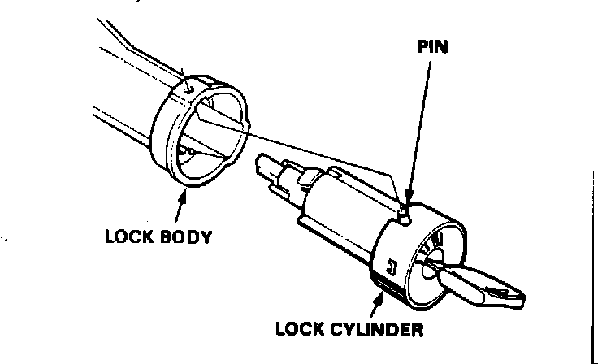
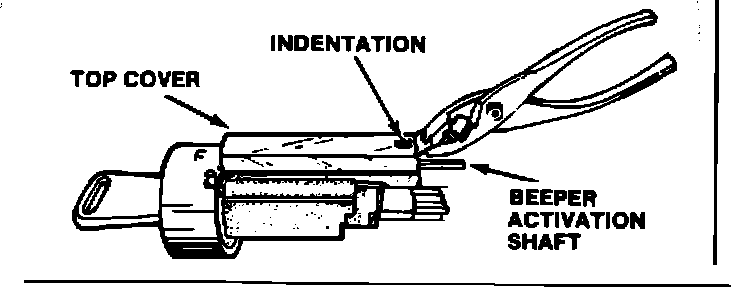
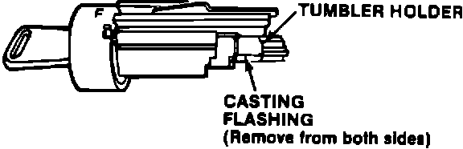
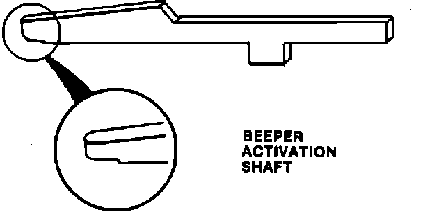
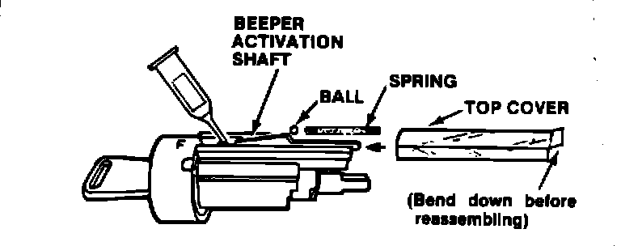

Chime - Ignition Key/Sunroof Warning Beeper Stays On
87acura01January 26, 1987
YEAR MODEL APPLICATION
'86-87 LEGEND ALL
86-017
Ignition Key/Sunroof Warning Beeper Stays On (Supersedes 86-017, dated October 20, 1986)
PROBLEM
The key/sunroof warning beeper continues to sound, even though the ignition key has been removed and the sunroof is completely closed.
PROBABLE CAUSE
Burrs on the beeper activation shaft and/or casting flashing on the tumbler holder cause the shaft to stick.

CORRECTIVE ACTION
1. Remove the steering column covers and the key light case.
2. Turn the ignition key to "I" (Accessory, position), push the pin in and remove the lock cylinder from the lock body.

3. Bend the end of the lock cylinder's top cover up, then slide the cover off with a pair of pliers.
NOTE:
^ You may need to pry up near the indentation in the cover to remove the cover.
^ Take care not to lose the spring and the 2.8 mm ball that are under the cover.
4. Clean the sliding area for the beeper activation shaft using Honda Contact/Brake Cleaner (P/N 08732-459-00010E), or equivalent.
5. Remove any, burrs found in the sliding area with a file or emery cloth.

6. Remove the casting flashing from the sides of the tumbler holder.

7. Lightly file all edges of the beeper activation shaft.
8. File the tip of the beeper activation shaft so the tip is rounded as shown.

9. Reassemble the lock as shown, using a small amount of dry graphite lock lubricant. To ease assembly, bend down the end of the top coxer prior to sliding it on the lock cylinder.
10. Reinstall the lock cylinder, the key, light case and the steering column covers.